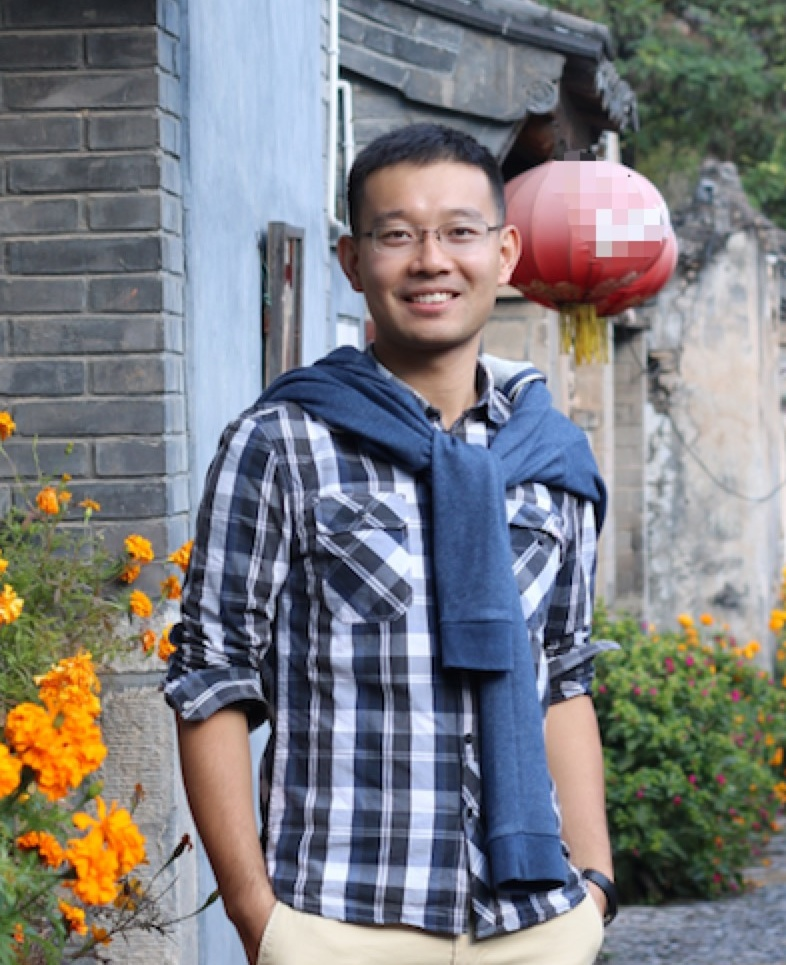

|  |
Guo CHEN (陈果) Hunan University Professor College of Computer Science and Electronic Engineering Deputy Director Office of Informatization Address: Hunan University, Yuelu District, Changsha, Hunan, China, 410082 Email: guochen@hnu.edu.cn 中文个人主页 |